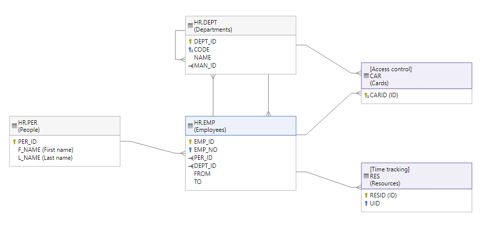
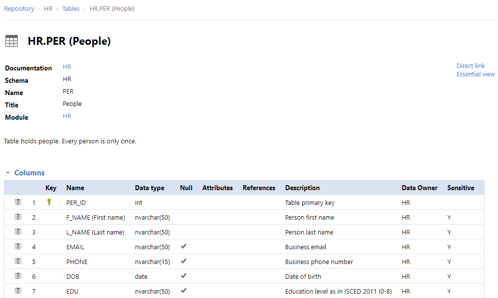
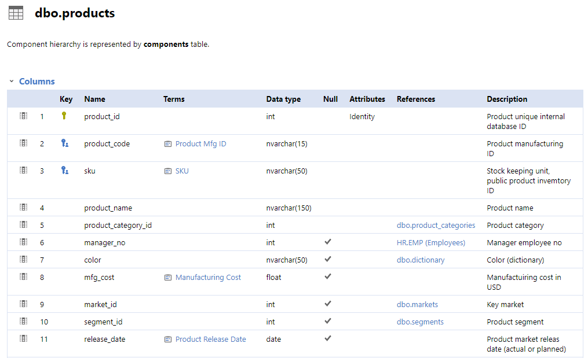
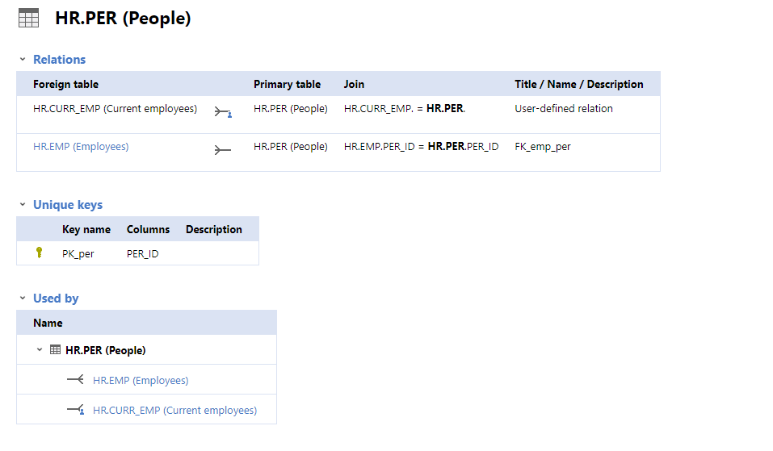
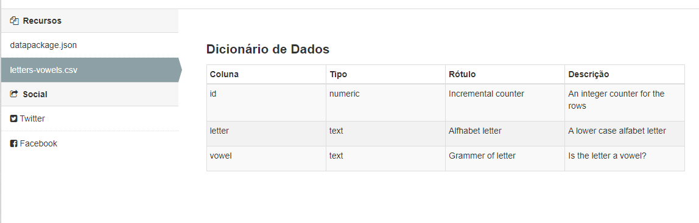

Motivação / contexto da demanda
Obrigações legais e Competência Institucional
A Lei Federal nº 12.527, de 18 de novembro 2011, conhecida como Lei de Acesso à Informação (LAI), regulou o acesso a informações previsto na Constituição Federal de 1988. Esse acesso à divulgação espontânea de informações de interesse coletivo, produzidas ou custodiadas pelos órgãos e entidades da Administração Pública, é conhecido por Transparência Ativa. No âmbito do Poder Executivo Estadual de Minas Gerais, a transparência ativa foi regulamentada por meio do Decreto nº 45.969, de 24 de maio de 2012.
Tanto a LAI como o Decreto definiram diretrizes a serem adotados nos Portais de Transparência e se relacionam ao processo de abertura e publicação de dados. Tais diretrizes foram replicadas, atualmente, na Lei 14.129 (Lei do Governo Digital). A Lei 14.129 ainda detalhou um pouco mais alguns requisitos na promoção da transparência ativa de dados, quer sejam:
descrição das bases de dados com informação suficiente sobre estrutura e semântica dos dados, inclusive quanto à sua qualidade e à sua integridade;
permissão irrestrita de uso de bases de dados publicadas em formato aberto;
completude de bases de dados, as quais devem ser disponibilizadas em sua forma primária, com o maior grau de granularidade possível, ou referenciar bases primárias, quando disponibilizadas de forma agregada;
atualização periódica, mantido o histórico, de forma a garantir a perenidade de dados, a padronização de estruturas de informação e o valor dos dados à sociedade e a atender às necessidades de seus usuários;
intercâmbio de dados entre órgãos e entidades dos diferentes Poderes e esferas da Federação, respeitado o disposto no art. 26 da Lei nº 13.709, de 14 de agosto de 2018 (Lei Geral de Proteção de Dados Pessoais);
A estrutura administrativa responsável por promover e induzir a aplicação de tais diretrizes no âmbito do poder Executivo do Estado de Minas Gerais é a Diretoria Central de Transparência Ativa (DCTA). Essa pasta, à luz do Decreto estadual 47.774/2019, em seu artigo 44, tem como competência implementar as ações de transparência ativa do Poder Executivo, com atribuições de conceber e implementar um processo para abrir, editar, documentar, publicar e atualizar dados:
III – fomentar a disponibilização de informações públicas em formato aberto no Portal da Transparência e nos sítios eletrônicos dos órgãos e entidades do Poder Executivo;
IV – planejar e coordenar o desenvolvimento das regras de negócio para as ferramentas e sistemas visando a promoção da transparência ativa no âmbito do Poder Executivo;
V – orientar os agentes públicos quanto a disponibilização de informações nos sítios institucionais e nos demais assuntos pertinentes a sua área de atuação.
Nesse sentido, faz parte do negócio da DCTA adotar:
pelo lado da demanda, um padrão de documentação de dados (metadados) que minimize o custo dos usuários em acessar e compreender os dados;
pelo lado da oferta, um processo com regras que seja o mais prático e fluido possível para os custodiantes de dados do Estado, desde que também se garanta a sua previsibilidade, autenticidade e compliance dos dados que estiverem sendo tratados
Dessa forma, o Portal de Dados Abertos utiliza a plataforma open source CKAN (Comprehensive Knowledge Analytics Network), bem como uma especificação de descrição de dados legível por máquina que possibilita integrações com o CKAN e outras ferramentas - Fricionless Data (‘dados sem fricção’).
Objetivos Estratégicos
Existe um compromisso institucional de abertura de dados, representado no indicador de incremento do PERCENTUAL DAS CONSULTAS DO PORTAL DA TRANSPARENCIA DIVULGADAS NO PORTAL DE DADOS ABERTOS DE MANEIRA TEMPESTIVA (%). Esse indicador possui metas para o horizonte 2021-2024 e foi pactuado no Plano Plurianual de Ação Governamental(programa 032) e no Planejamento Estratégico da CGE. A Estrategia de Tecnologia de Informação e Comunicação (TIC) do Estado também prevê uma diretriz de implantar 10 novos conjuntos de dados no Portal de Dados Abertos.
Em consonância com (i) os princípios e normas de transparência e governo aberto expressos nas bases legais, bem como (ii) as competências institucionais da Diretoria Central de Transparência Ativa (DCTA), e também com (iii) os objetivos estratégicos acima enumerados, apresenta-se a contratação de solução de ETL para o Portal de Dados Abertos da Diretoria Central de Transparência da Controladoria Estadual de Minas Gerais, com foco nas etapas de edição e visualização dos metadados dos dados.
Visão geral da demanda
A partir das premissas citadas anteriormente, e considerando a baixa experiência dos custodiantes de dados no manejo de ferramentas de dados, a demanda se estrutura na necessidade de se tornar o mais prático possível o caminho percorrido pelo custodiante dos dados a serem abertos, desde a documentação dos metadados, até a sua publicação e controle de versão/alterações.
Mais especificamente, o seu objetivo é permitir a visualização em HTML da documentação de um conjunto de dados realizada com o padrão de metadados Frictionless Data. A visualização deve ser possível durante o processo de produção da documentação pelos publicadores de dados, bem como após a catalogação do conjunto de dados na solução de catálogo de dados utilizada no Portal de Dados Abertos de Minas Gerais, o CKAN.
Para atender esses dois casos de uso devem ser desenvolvidos:
Programa de linha de comando para geração de site HTML estático para visualização dos metadados constantes de um data package
Customização do CKAN para visualização dos metadados de conjuntos de dados e seus recursos que foram documentados como data packages
- Limitações e problemas a serem resolvidos:
- Há uma necessidade de controle de versão, com visualizações estáticas para cada alteração, sem publicação, mas para circulação interna entre custodiante e gestor do Portal de Dados, de alguns artefatos (metadados, dicionários, relacionamentos, diagramas). Exemplos:
- O CKAN não permite visualização intermediária durante o processo de elaboração ou edição dos metadados, caso não esteja usando a interface gráfica. Ele tabmém não possibilita visualização dos relacionamentos entre tabelas ou explicitação das chaves primárias ou estrangeiras.
- O uso de google docs para a finalidade de compartilhar versões intermediárias dos dicionários de dados, por exemplo, é limitado para acertar conceitos e definições com as áreas de uma forma privativa e que sejam possíveis visualizações de todas as edições.
- Forma de elaboração do arquivo em formato json (documentação legível por máquina), a partir das definições estabelecidas no processo de documentação legível por pessoas: a documentação dos metadados (elaboração do datapackage) pode ser realizada pelo datapackage creator. Entretanto, essa ferramenta não exaure toda a gama necessária de descritores de metadados (datapackage creator) que a própria API do CKAN requer. Após sua criação inicial, há uma dificuldade de se editar manualmente o arquivo em formato json gerado (a começar pela escolha da ferramenta de edição).
- Multiplicidade de fontes e formatos de dados a serem publicados no Portal de Dados Abertos (arquivos csv ou xls de emails, servidores de ftp, sítios governamentais)
- Há uma necessidade de controle de versão, com visualizações estáticas para cada alteração, sem publicação, mas para circulação interna entre custodiante e gestor do Portal de Dados, de alguns artefatos (metadados, dicionários, relacionamentos, diagramas). Exemplos:
Especificação
As necessidades de negócio, no processo de documentação de um conjunto de dados, que devem ser supridas com os itens especificados são:
representação visual dos metadados -> arquitetura e identidade visual
metadados table schema -> metadados tabular data resource
diagramas estáticos -> diagramas ER
diagramas interativos -> diagramas ER
metadados de validação -> metadados de validação
metadados recursos vs schema -> metadados table schema
metadados estatísticas descritivas -> metadados estatísticas descritivas
exportar para PDF
exportar diagramas para SVG
Itens
Documentação legível por humanos:
Implementação de solução e capacitação para que custodiantes de dados e gestores do Portal de Dados Abertos criem e controlem as alterações de versão dos dicionários de dados. Essas versões devem ter visualizações estáticas para cada (de forma análoga aos pull requests do github), mas sem necessidade de publicação, e somente com circulação restrita interna entre gestores do portal de Dados Abertos e custodiantes de dados.
Essa solução deve conter ou permitir:
visualização gráfica/diagrama RD (entidade relacionamento) que mostre recursos que têm relação entre si

navegação entre diagrama e dicionário (tabela), que possibilite a operabilidade de, em se clicando na tabela, o foco para o local do diagrama seja trazido para a visualização; (feição do dicionário de dados tem de responder a interações no diagrama)

visualização do dicionário tem de mostrar as restrições de cada variável (chave primária/secundária, etc) - essas funcionalidades deverão estar à disposição no momento da elaboração do datapackage (outras ferramentas existem quando ele está pronto, p. ex. = https://github.com/frictionlessdata/ckanext-validation)


um gerador de site estático: as funcionalidades da solução a ser implementada devem acontecer num formato de site completo, com design, sem nenhum componente de servidor que o sustente
visualização do dicionário tem de ser uma extensão no CKAN

Documentação legível por máquina:
Implementação de solução e capacitação para que custodiantes de dados realizem a confecção do documento descritivo dos metadados do conjunto de dados (datapackage.json).
Obrigações/requisitos
A contratação envolverá:
- apresentação de alternativas de solução para os problemas apresentados, diante dos requisitos indicados
- discussão com equipe gestora do Portal
- implementação das soluções aprovadas de forma que a equipe da DCTA possa conduzí-las de forma independente do contratante
- elaboração de tutorial auto-instrucional da contratante para postagem no Portal de Dados Abertos e consumo dos órgãos/entidades custodiantes
Dependências / Integrações
Ambiente Tecnológico (se necessário indicação)
- (Python, Jinja2 templates, Bootstrap, jQuery, TypeScript, React, Next.js, Geradores de Site Estático)
- https://docs.ckan.org/en/2.8/theming/index.html
- https://github.com/frictionlessdata/components
- https://github.com/datopian/portal.js
permissões de rede PRODEMGE/CGE
Desenvolvimento de sistemas: diretrizes e exemplos para o estabelecimento de controles com base em padrões de mercado
Enquadramento nos requisitos e premissas das normas mais recentes
Lei Geral de Proteção de Dados
Decreto 10.046/2019
(dispõe sobre a governança no compartilhamento de dados no âmbito da ADM Federal)
Seção II: Do compartilhamento amplo de dados
Art. 11. O compartilhamento amplo de dados dispensa autorização prévia pelo gestor de dados e será realizado pelos canais existentes para dados abertos e para transparência ativa, na forma da legislação.
§ 1º Na hipótese de o dado de compartilhamento amplo de que trata o caput não estar disponível em formato aberto, o solicitante de dados poderá requerer sua abertura junto ao gestor de dados.
(…)
§ 3º A Controladoria-Geral da União e o Comitê Interministerial de Governança, de que trata o Decreto nº 9.203, de 22 de novembro de 2017, poderão recomendar, quando econômica e operacionalmente viável, a abertura dos dados de compartilhamento amplo em transparência ativa.
§ 4º Os solicitantes e recebedores de dados adotarão medidas para manter a integridade e a autenticidade das informações recebidas.
§ 5º Os dados de compartilhamento amplo serão catalogados no Portal Brasileiro de Dados Abertos em formato aberto.
OBS.: minuta de decreto análogo está sendo discutido pelas instâncias estaduais de governança, com alta probabilidade de replicação das definições sobre as categorias de compartilhamento de dados
Exemplos / Pesquisa
-
usa a interface do datapackage creator como ‘google docs’ para edição colabotativa de um mesmo datapackage.json; necessita instalação de outro app (Docker); é uma ferramenta recente (criada em 2020, a referência do blog é de janeiro de 2021); faltariam os itens de especificação 1.1, 1.2 e 1.3
The solution in this tool fund was to build a system that uses Data Package Creator to enable data managers and researchers to create and share dataset schemas, edit them, post messages and export the schemas in different formats (text, Markdown, PDF). To encourage collaboration within a project multiple researchers can work on the same schema. Being able to view the description in human-readable formats makes it easier to spot mistakes and to integrate with third-party data repositories.
From a data manager’s perspective the tool allows them to keep tabs on the datasets being managed and their progress. It prevents details getting lost in emails and hopefully provides a nicer interface to encourage better collaboration.
In other words: think of a very simplified “Google Docs” specialised for data packages
-
Contém diagramas de relacionamento;
permitem navegar para as tabelas de dicionário de dados a partir dos hiperlinks contidos no diagrama;
para cada tabela, além do dicionário, apresenta as chaves primária e estrangeira e os relacionamentos possíveis entre tabelas (além do método de chamada para cruzá-las)
exemplo: https://dataedo.com/samples/html2/enterprise/#/doc/m103t3733/procurement/tables/pur-shipment-lines
-
- guia para edição de metadados: https://help.data.world/hc/en-us/articles/1260802115269-Custom-metadata